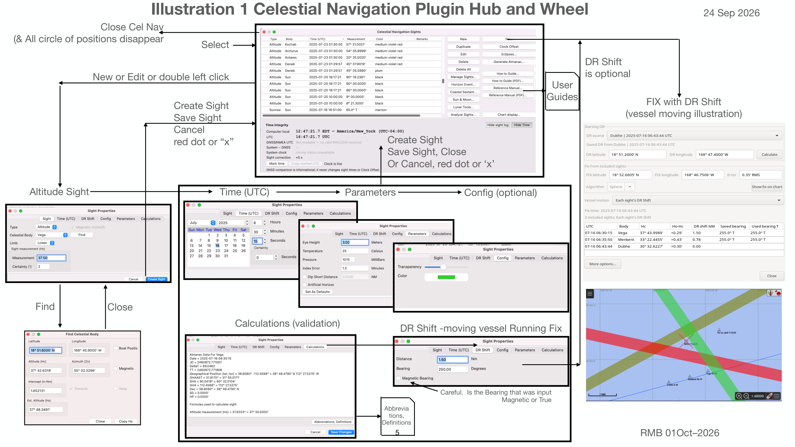

Full-size illustration. Scroll to inspect the details.

Illustration 1 Celestial Navigation Plugin Hub and Wheel
24 Sep 2026
Close Cel Nav (& All circle of positions disappear
Select
DR Shift is optional
New or Edit or double left click
User Guides
FIX with DR Shift (vessel moving illustration)
Create Sight Save Sight Cancel red dot or “x”
Create Sight Save Sight, Close Or Cancel, red dot or ‘x’
Altitude Sight Time (UTC) Parameters
Config (optional)
Find
Close
DR Shift -moving vessel Running Fix Calculations (validation)
Careful. Is the Bearing that was input
Magnetic or True
Abbrevia
tions, Definitions